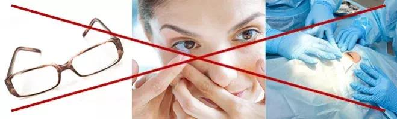

Der Lehrer lachte aus und verspottete ihn. Aber dieser Typ hat
bewiesen, dass seine Erfindung hilft, das Sehvermögen wiederherzustellen!
Die Geschichte eines Studenten, der für
die Gesundheit seines Großvaters einen
wissenschaftlichen Durchbruch geschafft hat
Hätte er der Demütigung Beachtung geschenkt, hätte die
Welt nie von seiner bahnbrechenden Entdeckung gehört. Der 20-jährige Diethelm Lutz aus
München hat sich ein einfaches Mittel patentieren lassen, das hilft, das Sehvermögen
wiederherzustellen. Die Erfindung des jungen Genies funktioniert mit vielen Gründen, die dazu
führen, dass das Sehvermögen schlechter wird - unabhängig von der Natur. Bis heute wurde
dieses Mittel von einer großen Anzahl von Menschen auf der ganzen Welt eingenommen. Der junge
Wissenschaftler erhält eine große Anzahl von begeisterten Kritiken. Aber wie kam es zu dieser
phänomenalen Entdeckung?
Diese Geschichte ist ein echtes Beispiel dafür, wie das moderne Bildungssystem echte Talente
erstickt. Bereits in den ersten Jahren der Hochschule wollte Diethelm Lutz im Auftrag der Hochschule am
nationalen Wettbewerb junger Wissenschaftler teilnehmen. Er zählte auf die Unterstützung und
zeigte seinem Lehrer eine Probe von einzigartigen Kapseln, die helfen, das Sehvermögen
wiederherzustellen und zu erhalten, indem sie von innen handeln. Als Antwort auf seine Offenheit
hörte er jedoch verächtliches Gelächter und die Worte: „Diese Entwicklungen sind nutzlos,
rede keinen Unsinn. Ich werde dich nicht blamieren lassen." Der Lehrer verspottete seinen
Schüler und scherzte direkt vor der gesamten Gruppe.
Zum Glück hat der Mann die Sache selbst in die Hand genommen. Mit seinem eigenen Taschengeld
finanzierte er seine Teilnahme am Wettbewerb und eine Reise in die Hauptstadt, wo die jungen
Wissenschaftler ihre Werke präsentierten. Dort wurde er von einem Investor entdeckt, der ihm half,
die Formel des Mittels in speziellen Innovationslabors mit Hilfe eines großen Teams von Spezialisten
zu perfektionieren. Heute wird das Patent für dieses Mittel auf Millionen Euro geschätzt. Der
junge Wissenschaftler wollte jedoch, dass diese Lösung nicht nur für wohlhabende Menschen
verfügbar ist, sondern auch für alle, die um ihre Vision kämpfen. Dank der Bemühungen
von Diethelm Lutz ist das einzigartige Mittel für
alle verfügbar!
"Ich wollte meinem Großvater helfen"
Die Leitung der Universität, die Diethelm Lutz bis vor kurzem besuchte, lehnte es ab, sich zu dieser
Frage zu äußern. Dennoch ist es uns gelungen, einen der dort arbeitenden Lehrer zu kontaktieren.
Er bat darum, dass sein Name nicht auf unserer Website veröffentlicht wird. Der Mann hat gesagt, dass
der Lehrer, der Entwicklung des talentierten Studenten vernachlässigt hat, sollte entlassen werden.
Die Entlassung konnte jedoch auf Wunsch von Diethelm Lutz selbst vermieden werden, der den Lehrer, der ihm
so viel Schmerz zugefügt hatte, um Verzeihung bat.
Ein junges Genie hat die Zeit für uns gefunden, um am Telefon zu sprechen. Auf die Frage, warum er
sich für einen Mann einsetzte, der all seine Ideen verspottete und andere erniedrigte, antwortete er
bescheiden:
"Menschen machen Fehler. Wir müssen ihnen immer eine zweite Chance geben. Genau das hat mich
mein Großvater gelehrt, für den ich ein Mittel entwickelt habe, das der Sehkraft helfen kann.
Ich wollte den Opa wirklich wieder gut sehen. Ich habe immer geglaubt, dass meine Erfindung ihm helfen
würde. Keine Kraft würde mich davon abhalten, an diesem Wettbewerb teilzunehmen. Ich bin froh,
dass ich jemanden getroffen habe, der an meine Idee geglaubt hat. Dadurch konnte ich nicht nur meinem
Großvater helfen, sondern auch Tausenden von Menschen, die nicht mehr hofften, ihre Sehprobleme
verbessern zu können".
Heute kämpfen die weltweit größten Pharmakonzerne um die einzigartige Entwicklung von
Diethelm Lutz - , die seine nächsten Projekte
finanzieren wollen. Dennoch betont er, dass er
zunächst sein Studium voll abschließen und erst dann seine Karriere fortsetzen will. Es ist
schwer vorstellbar, was dieser talentierte junge Mann uns in ein paar Jahren überraschen könnte!
Unsere Redaktion kontaktierte die weltweit führenden Experten für Augenheilkunde, damit er sich
über die Erfindung des jungen Genies und den Wirkungsmechanismus des innovativen Mittels
äußert.
Die Erfindung von Diethelm Lutz schockierte die gesamte wissenschaftliche Gemeinschaft! Nachdem ich
angefangen habe, dieses Mittel in der Praxis zu verwenden, wurde ich von positiven Ergebnissen angenehm
überrascht. Kapseln ist ein Komplex aus
B-Vitaminen und Mikroelementen mit antioxidativen Eigenschaften.
hat eine
breite Palette von nützlichen Eigenschaften für:
Verbesserung und Wiederherstellung der Sehkraft bei konstanter Belastung und langer Computerarbeit
Die Möglichkeit, die Wände der Augenkapillaren zu stärken
Schutz vor Fotoschäden
Verringerung des Risikos von Kurzsichtigkeit
Schaffung von Bedingungen für eine schnellere Wiederherstellung des Sehvermögens nach
längerer Anstrengung

Ich empfehle auch separat
für die Erhaltung der
Sehkraft bei Menschen in der Altersgruppe
50+, da dieses Mittel die Entwicklung der altersbedingten Makuladegeneration verhindern, die visuelle
Funktion verbessern und das Risiko einer retinalen Dystrophie reduzieren kann.
Ich glaube, dass der Erfolg der Wirksamkeit dieses Mittels in einer einzigartigen Zusammensetzung ist!
Die Formel von hat aufgrund des hohen
Gehalts an Vitaminen und Spurenelementen
mit antioxidativen Eigenschaften eine erhöhte Effizienz.
zielt
darauf ab, die Vision umfassend zu unterstützen und Müdigkeit und "Alterung" der
Augen zu verhindern.
Hoher Gehalt an B-Vitaminen und Zink, verhindert eine Verletzung der dunklen Anpassung
und Verhornung der Haut. Vitamin B1 schützt die Zellen vor Schäden durch aktive
Sauerstoffformen und freie Radikale. Bei regelmäßiger Einnahme von
kann das Risiko von
Kurzsichtigkeit reduziert werden.
stärkt unter
anderem das Sehvermögen und erhöht seine Sehschärfe
dank Cyanocobalamin und Vitamin B12, die die Membranen der Blutgefäße und Kapillaren schützen
und die Mikrozirkulation des Blutes verbessern, was besonders wichtig für den Kristall des Auges und
der Netzhaut ist. Auf diese Weise werden die Augen nach längerer Arbeit mit dem Computer keine
Rötung und übermäßige Trockenheit haben.
Beschleunigung der Regeneration von Rhodopsin und Aktivierung von Netzhautenzymen unter dem Einfluss von
Riboflavin verbessern die Nachtsicht, reduzieren das Risiko von Netzhautdystrophie, beschleunigen den
Prozess der Wiederherstellung des Sehvermögens nach längerer Sehbelastung.
Kapseln sind sehr bequem zu nehmen - 2 Kapseln pro Tag vor den Mahlzeiten,
mit genügend
Wasser.
Nach Empfehlungen von Experten haben unsere Journalisten den Hersteller kontaktiert,
um herauszufinden, wie
man Bionetic bestellen kann. Es stellte sich heraus, dass es aufgrund der Schuld der
"Apothekenmafia" immer noch nicht auf unserem Markt in der Öffentlichkeit ist! Für
Monopolisten und große Pharmamarken sind solche Mittel, die ein solches effektives Ergebnis geben,
nicht profitabel, da die Nachfrage nach ihren Produkten für das Sehvermögen deutlich sinken wird.
Und das sind Milliardenumsätze! Verkäufe von
werden von Vertretern von
"Schattenstrukturen" einfach durch ihre korrupten Verbindungen blockiert. Im Lager des Herstellers
blieb die letzte Lieferung, die nur bis 04.10.2021 gekauft werden kann.
Gut gemacht! Jung und viel klüger als ein erwachsener Lehrer.
Markus
Ich habe im Fernsehen eine Sendung über diese Erfindung gesehen. Und habe bereits ein Mittel
für die ganze Familie bestellt.
Nadine
Ich habe die Zusammensetzung sorgfältig studiert. Einige natürliche Komponenten, keine
Chemie. Ich habe auch eine Bestellung für meine Eltern gemacht.
Christian
Ständig arbeite ich am Computer, habe schreckliche Schmerzen und Trockenheit in den Augen. Nach
dem -Kurs
fühle ich mich viel besser. Die Sehkraft hat sich deutlich verbessert.
Amanda
Dieser Junge ist sehr schlau. Ich habe bereits
ausprobiert, ein Glücksfall
für meine
Augen.
Monika
Ich nehme
seit 2 Wochen ein und bin beeindruckt. Früher, als ich die Zusammensetzung des
Produkts auf der Verpackung im Laden lesen wollte, musste ich die Inschriften fast zur Nase tragen, um
etwas zu sehen. Und nach diesen Kapseln lese ich ohne Probleme Etiketten und Zeitungen.
Linda
Es wird zu Recht gesagt, dass das Problem nicht außen, sondern innen gelöst werden muss.
Diese Kapseln verbessern das Sehvermögen erstaunlich, ich empfehle sie jedem.
Matthias
Meine Mutter hat das Sehvermögen von -5 auf beiden Augen. Nachdem ihr ein Spezialist
empfohlen hatte und sie einen Kurs machte, verzeichneten sie eine deutliche Verbesserung des
Sehvermögens.
Theresa
Ich fahre Auto und die ständige Ermüdung der Augen erlaubte mir nicht, mich zu konzentrieren.
Dank dieses Mittels habe ich schon vergessen, wann ich das letzte Mal dieses nervige Gefühl hatte.
Martina
Ich dachte, ich würde mein ganzes Leben gut sehen. Aber leider ist die Sehkraft nach 55 Jahren
stark gesunken. Vielen Dank an meinen Spezialisten, dass er mir dieses Mittel empfohlen hat. Jetzt lese
ich ohne Brille.
Andreas
Ich hatte das Syndrom des trockenen Auges aufgrund meiner Arbeit am Computer und meine Sehkraft
verschlechterte sich von Jahr zu Jahr. Aber dank dieser Kapseln kann ich wieder normal sehen.
Martha
Nachdem meine Mutter dieses Mittel ausprobiert hatte, sagte der Spezialist ihr, dass sie in so kurzer
Zeit noch nie eine solche Veränderung zum Besseren gesehen hatte.
Karl
Ärgerlich, dass das Mittel bald zu Ende ist. Es ist Zeit für diese Monopolisten, den Jungen
den Weg zu geben.
Andreas
Ich hatte auch Lehrer, die neue Ideen nicht akzeptieren wollten und nur auf ihrer Meinung bestanden.
Das tut sehr weh. Gut gemacht, dass er damit umgehen konnte.
Renate
Dieser junge Wissenschaftler drehte die Welt mit seinem Wunsch, Opa zu helfen! Ich werde diese Kapseln
auf jeden Fall bestellen, die natürliche Zusammensetzung hat mir sehr gut gefallen.


Maria
Gut gemacht! Jung und viel klüger als ein erwachsener Lehrer.